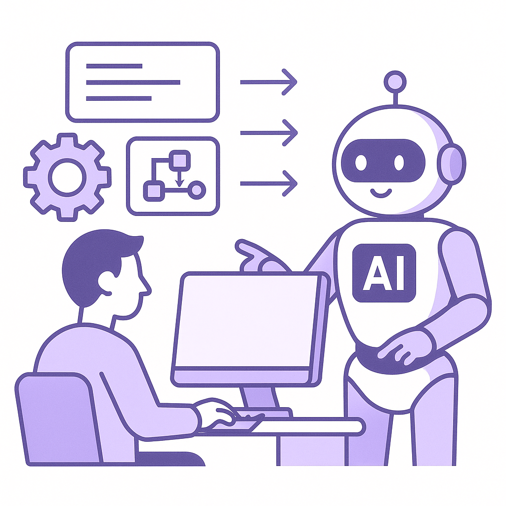

Publishing Recommendation
publishToday's posts effectively engage with current AI trends, offering practical insights into their implications for business and technology. The content aligns well with Purands AI's voice, focusing on concrete observations and mechanisms, particularly in security, customer engagement, and AI development. The posts are concise, informative, and avoid any exaggerated claims, making them suitable for publication without revisions.
LinkedIn Posts (10)
1. ClickFix attacks are tricking Mac and Windows users into hacking themselves ★ Purands solution · high priority
CTA: How are you enhancing data security measures within your organization?
{kind=link}
Image prompt · flat-vector
Caption: ClickFix attacks and AI-driven security.
Alternative hooks
- ClickFix attacks are the latest security threat, tricking users into compromising their own systems.
- Cyber threats like ClickFix attacks pose new challenges for maintaining customer trust.
- Customer data security is crucial as ClickFix attacks rise, impacting trust and retention.
Research behind this post (sources, summaries & confidence)
ClickFix attacks are tricking Mac and Windows users into hacking themselves conf 0.70 · Customer data platforms
Security threats like ClickFix attacks can compromise customer data, affecting trust and retention. Companies need to strengthen their data protection measures to maintain customer confidence.
Sources & what I took from each
- Rising security threats targeting end-users.: ClickFix attacks are a new form of security threat targeting users on Mac and Windows platforms. ↗ read source
- Potential impact on customer trust and data integrity.: These attacks could lead to compromised customer data, affecting trust and retention. ↗ read source
Original trend links
Risks / caveats
- The evolving nature of cyber threats means that companies must continuously update their security measures.
2. Instacart, Shipt launch AI-powered shopping assistants ★ Purands solution · high priority
CTA: How are you seeing AI change the way you engage with customers?
Alternative hooks
- Instacart and Shipt's new AI assistants are reshaping shopping experiences.
- AI in customer shopping is here, with Instacart and Shipt leading the way.
- Personalized shopping experiences are gaining ground with AI tools.
Research behind this post (sources, summaries & confidence)
Instacart, Shipt launch AI-powered shopping assistants conf 0.70 · AI agents for marketing
The launch of AI-powered shopping assistants by Instacart and Shipt signifies the growing trend of AI in enhancing personalized shopping experiences, which can improve customer satisfaction and retention.
Sources & what I took from each
- Introduction of AI tools in consumer shopping.: Instacart and Shipt's AI-powered assistants are designed to enhance shopping experiences through personalization. ↗ read source
- Focus on enhancing the customer shopping experience.: The AI assistants aim to provide personalized recommendations and streamline the shopping process. ↗ read source
Original trend links
Risks / caveats
- User adoption rates and satisfaction with AI recommendations.
3. FedEx launches Shopify app to combat surprise import charges ★ Purands solution · high priority
CTA: How do unexpected costs affect your customer retention strategy?
Alternative hooks
- Surprise import charges are a headache for Shopify merchants.
- New FedEx app aims to end surprise import charges.
- How predictable are your Shopify import charges?
Research behind this post (sources, summaries & confidence)
FedEx launches Shopify app to combat surprise import charges conf 0.60 · Shopify ecosystem
This app addresses a common pain point for e-commerce merchants using Shopify by reducing surprise import charges, which can improve customer satisfaction and retention rates.
Sources & what I took from each
- Integration with Shopify indicates strategic alignment with a major e-commerce platform.: FedEx's app is designed to help Shopify merchants manage import charges, aligning FedEx with Shopify's large merchant base. ↗ read source
- Focus on mitigating import charges directly impacts customer experience.: By addressing import charges, the app potentially reduces unexpected costs for consumers, improving their shopping experience. ↗ read source
Original trend links
- https://www.retaildive.com/news/fedex-launches-shopify-app-to-combat-surprise-import-charges/830262/
Risks / caveats
- The effectiveness of the app in reducing import charges and improving customer satisfaction is yet to be proven.
4. AWS Introduces Pizza Bot: An Open Source Inbox for Background AI Agents ★ Purands solution · high priority
CTA: How do you see AI agents reshaping your customer interactions?

⬇ Download image{kind=link}
Image prompt · flat-vector
Caption: AI agents streamlining workflows.
Alternative hooks
- AI agents are simplifying daily tasks, and AWS's new Pizza Bot is a prime example.
- How can AI agents transform retention marketing? AWS’s Pizza Bot shows the way.
- AWS's Pizza Bot is making AI integration into workflows easier than ever.
Research behind this post (sources, summaries & confidence)
AWS Introduces Pizza Bot: An Open Source Inbox for Background AI Agents conf 0.60 · AI agents for marketing
AWS's launch of Pizza Bot reflects the trend towards integrating AI agents into everyday workflows, which can streamline operations and enhance customer interactions in retention marketing.
Sources & what I took from each
- Integration of AI agents into routine tasks.: Pizza Bot is designed to facilitate the integration of AI agents into workflows, enhancing productivity. ↗ read source
- Support for open source tools in AI development.: AWS's open-source approach encourages broader adoption and customization of AI tools. ↗ read source
Original trend links
Risks / caveats
- Adoption depends on the ease of integration and developer support.
5. AI-driven personalization in retail ★ Purands solution · high priority
CTA: How do you see AI-driven personalization affecting your shopping habits?
Alternative hooks
- Imagine scrolling through your camera roll and being able to shop the outfits instantly.
- Daydream's fashion app shows how AI-driven personalization can transform retail.
- Shopping from your camera roll? Daydream makes it possible with AI.
Research behind this post (sources, summaries & confidence)
Fashion app Daydream uses Apple Intelligence to help you shop the outfits in your camera roll conf 0.60 · AI in business
Daydream's use of AI for personalized shopping experiences showcases the potential of AI in enhancing consumer engagement and driving sales, particularly in fashion retail.
Sources & what I took from each
- AI-driven personalization in retail.: Daydream uses AI to personalize shopping experiences, enhancing consumer engagement. ↗ read source
- Integration with Apple systems for enhanced user experiences.: The app leverages Apple Intelligence for improved user experience in shopping. ↗ read source
Original trend links
Risks / caveats
- User adoption and satisfaction with AI-driven shopping recommendations.
6. Teens start to trust AI recommendations more than friends, parents ★ Purands solution · high priority
CTA: How are you adapting your marketing strategies to engage the AI-savvy teen market?
Alternative hooks
- Teens are turning to AI for shopping advice over their friends.
- In APAC, AI is becoming a trusted advisor for teenagers.
- Who do teens trust more than their parents? AI.
Research behind this post (sources, summaries & confidence)
Teens start to trust AI recommendations more than friends, parents conf 0.50 · CRM
This shift in trust toward AI recommendations over traditional sources affects how brands should approach personalization and recommendation strategies to improve customer engagement and retention.
Sources & what I took from each
- Growing influence of AI in consumer decision-making.: Reports indicate that teenagers are increasingly trusting AI recommendations. ↗ read source
Original trend links
Risks / caveats
- The trend is based on qualitative observations, and quantifiable data supporting this shift is not robust.
7. Anthropic’s 3-Step ‘Pace the Frontier’ Plan Wins OpenAI, xAI and Microsoft Support
CTA: How do you think this shift will impact AI development in your region?
Alternative hooks
- What happens when AI giants decide to tap the brakes?
- OpenAI, xAI, and Microsoft just hit pause on the AI race.
- Is the AI industry finally prioritizing safety over speed?
Research behind this post (sources, summaries & confidence)
Anthropic’s 3-Step ‘Pace the Frontier’ Plan Wins OpenAI, xAI and Microsoft Support conf 0.80 · AI industry
The endorsement of a slowdown in AI development by major players like OpenAI, xAI, and Microsoft reflects growing concerns about AI safety and regulation. This could impact AI development strategies and timelines, especially in the APAC region where AI growth is aggressive.
Sources & what I took from each
- Major AI companies are publicly aligning on slowing down AI development.: OpenAI, xAI, and Microsoft have shown support for Anthropic’s plan, indicating a coordinated approach to AI safety. ↗ read source
- Safety concerns and regulatory discussions are intensifying.: There is increasing dialogue about AI safety among tech leaders and policymakers. ↗ read source
Original trend links
- https://www.marktechpost.com/2026/09/13/anthropics-3-step-pace-the-frontier-plan-wins-openai-xai-and-microsoft-support-is-it-too-late-to-slow-ai-down/
- https://www.theverge.com/ai-artificial-intelligence/995141/ai-executives-politicians-safety-regulation-anthropic-dario-amodei
Risks / caveats
- Potential slowdown in AI innovation and competitive disadvantage in regions not adopting similar measures.
8. JD.com expands physical AI in logistics with 3 million robots
CTA: What do you think about the role of AI in logistics? Share your thoughts.
Alternative hooks
- Three million robots. That's JD.com's bold move in logistics.
- AI in logistics isn't just a trend; it's a new reality with JD.com's 3 million robots.
- How do 3 million robots change the game in logistics? JD.com is finding out.
Research behind this post (sources, summaries & confidence)
JD.com expands physical AI in logistics with 3 million robots conf 0.80 · AI in business
JD.com's massive investment in AI and robotics for logistics highlights the push towards automation in supply chains, which can enhance efficiency and service levels, directly affecting customer retention.
Sources & what I took from each
- Large-scale deployment of robots in logistics.: JD.com plans to deploy 3 million robots in its logistics operations, indicating a significant investment in automation. ↗ read source
- Commitment to AI-driven operational efficiency.: The deployment is part of JD.com's strategy to enhance logistics efficiency through AI and robotics. ↗ read source
Original trend links
Risks / caveats
- High initial costs and potential technical challenges in deploying and maintaining a large fleet of robots.
9. OpenAI buys smartphone camera maker Glass Imaging for $300 million
CTA: What potential do you see in AI-enhanced image processing?
Alternative hooks
- OpenAI just made a $300 million bet on imaging tech.
- What does a smartphone camera company have to do with AI?
- Image processing isn't just about clearer photos anymore.
Research behind this post (sources, summaries & confidence)
OpenAI buys smartphone camera maker Glass Imaging for $300 million conf 0.80 · AI startups
OpenAI's acquisition of Glass Imaging may indicate a strategic move towards integrating advanced image processing capabilities, which could enhance user experiences and engagement in AI-driven applications.
Sources & what I took from each
- Significant acquisition by a major AI player.: OpenAI's acquisition of Glass Imaging for $300 million reflects a strategic investment in imaging technology. ↗ read source
- Potential expansion into new AI applications involving imaging technology.: The acquisition suggests OpenAI's interest in expanding its capabilities in image processing. ↗ read source
Original trend links
Risks / caveats
- Integration challenges and realization of value from the acquisition.
10. AI infrastructure company Cornelis raises $205M to chip away at Nvidia’s dominance
CTA: What impact do you think Cornelis' challenge to Nvidia will have on AI hardware innovation?
Alternative hooks
- In the AI hardware race, Cornelis just raised a significant $205 million.
- Cornelis is making waves with a massive $205 million funding round.
- Can Cornelis really challenge Nvidia with $205 million in its pocket?
Research behind this post (sources, summaries & confidence)
AI infrastructure company Cornelis raises $205M to chip away at Nvidia’s dominance conf 0.70 · AI startups
Cornelis' significant funding round and focus on AI infrastructure highlight the competitive landscape in AI hardware. This is relevant for retention marketing as improved infrastructure could lead to better AI service delivery and cost efficiencies.
Sources & what I took from each
- Large funding round indicates investor confidence.: Cornelis raised $205 million, which is a substantial amount for an AI infrastructure company, indicating strong investor confidence. ↗ read source
- Targeting Nvidia's dominance suggests a shift in AI hardware dynamics.: Cornelis is specifically focusing on challenging Nvidia, which is a dominant player in AI hardware. ↗ read source
Original trend links
- https://techcrunch.com/2026/09/14/ai-infrastructure-company-cornelis-raises-205m-to-chip-away-at-nvidias-dominance/
- https://www.techmeme.com/260914/p38#a260914p38
Risks / caveats
- Cornelis may face challenges in competing with Nvidia's established market position and technological advancements.
Today's Trends
| # | Trend | Category | Why it matters |
|---|---|---|---|
| 1 | Anthropic’s 3-Step ‘Pace the Frontier’ Plan Wins OpenAI, xAI and Microsoft Support
source source |
AI industry | The endorsement of a slowdown in AI development by major players like OpenAI, xAI, and Microsoft reflects growing concerns about AI safety and regulation. This could impact AI development strategies and timelines, especially in the APAC region where AI growth is aggressive. |
| 2 | AI infrastructure company Cornelis raises $205M to chip away at Nvidia’s dominance
source source |
AI startups | Cornelis' significant funding round and focus on AI infrastructure highlight the competitive landscape in AI hardware. This is relevant for retention marketing as improved infrastructure could lead to better AI service delivery and cost efficiencies. |
| 3 | FedEx launches Shopify app to combat surprise import charges
source |
Shopify ecosystem | This app addresses a common pain point for e-commerce merchants using Shopify by reducing surprise import charges, which can improve customer satisfaction and retention rates. |
| 4 | JD.com expands physical AI in logistics with 3 million robots
source |
AI in business | JD.com's massive investment in AI and robotics for logistics highlights the push towards automation in supply chains, which can enhance efficiency and service levels, directly affecting customer retention. |
| 5 | Teens start to trust AI recommendations more than friends, parents
source |
CRM | This shift in trust toward AI recommendations over traditional sources affects how brands should approach personalization and recommendation strategies to improve customer engagement and retention. |
| 6 | ClickFix attacks are tricking Mac and Windows users into hacking themselves
source |
Customer data platforms | Security threats like ClickFix attacks can compromise customer data, affecting trust and retention. Companies need to strengthen their data protection measures to maintain customer confidence. |
| 7 | OpenAI buys smartphone camera maker Glass Imaging for $300 million
source |
AI startups | OpenAI's acquisition of Glass Imaging may indicate a strategic move towards integrating advanced image processing capabilities, which could enhance user experiences and engagement in AI-driven applications. |
| 8 | Instacart, Shipt launch AI-powered shopping assistants
source |
AI agents for marketing | The launch of AI-powered shopping assistants by Instacart and Shipt signifies the growing trend of AI in enhancing personalized shopping experiences, which can improve customer satisfaction and retention. |
| 9 | Microsoft AI’s MAI-Transcribe-2 undercuts OpenAI, Google and ElevenLabs on price and speed
source |
AI industry | Microsoft's competitive pricing for its transcription service highlights the intense competition in AI services, potentially affecting market dynamics and pricing strategies for AI solutions. |
| 10 | NVIDIA Open-Sources OSMO: One YAML Orchestrates Physical AI Training, Simulation, and Robot Testing
source |
AI in business | NVIDIA's open-sourcing of OSMO facilitates more accessible AI and robotics development, which could accelerate innovation and application in various industries, including those focused on customer engagement. |
| 11 | AWS Introduces Pizza Bot: An Open Source Inbox for Background AI Agents
source |
AI agents for marketing | AWS's launch of Pizza Bot reflects the trend towards integrating AI agents into everyday workflows, which can streamline operations and enhance customer interactions in retention marketing. |
| 12 | Samsung taps Mistral AI models for semiconductor manufacturing
source |
AI in business | Samsung's partnership with Mistral AI for semiconductor manufacturing highlights the integration of AI in industrial processes, which could lead to innovations that benefit consumer electronics and related services. |
| 13 | Amazon invests over $230M in benefits, pay for Whole Foods store employees
source |
CRM | Amazon's investment in employee benefits at Whole Foods can improve staff retention and customer service, indirectly boosting customer loyalty and repeat business. |
| 14 | Fashion app Daydream uses Apple Intelligence to help you shop the outfits in your camera roll
source |
AI in business | Daydream's use of AI for personalized shopping experiences showcases the potential of AI in enhancing consumer engagement and driving sales, particularly in fashion retail. |
Risk Assessment
No risks flagged.
Suggested LinkedIn Comments (30)
Open each post, then paste the copied comment. Nothing is posted automatically.
1. insight · rss:techcrunch.com — When Jensen Huang took a live call from Trump, some of us were more focused the
Post by: rss:techcrunch.com
Why it works: The comment highlights the importance of brand choice in public settings, providing a practical insight into tech perception.
↗ Open LinkedIn post to paste comment2. opinion · rss:techcrunch.com — Though Elon Musk and Sam Altman have supported Dario Amodei's calls to slow the
Post by: rss:techcrunch.com
Why it works: It captures the ongoing debate in AI development, offering a reasoned stance on the importance of safety alongside advancement.
↗ Open LinkedIn post to paste comment3. insight · rss:techcrunch.com — Glass Imaging was founded by a pair of former Apple engineers who previously led
Post by: rss:techcrunch.com
Why it works: The comment draws on the engineers' proven track record, suggesting future innovation potential, which adds depth to the post.
↗ Open LinkedIn post to paste comment4. insight · rss:techcrunch.com — The company also announced a product called Active Compute Fabric, a network tec
Post by: rss:techcrunch.com
Why it works: It provides a practical insight into how the new product can address a specific technical challenge, enhancing the post's context.
↗ Open LinkedIn post to paste comment5. insight · rss:techcrunch.com — Prime Video is adding on-demand local and national news clips as Amazon joins ot
Post by: rss:techcrunch.com
Why it works: The comment connects the strategy to consumer behavior, offering a clear perspective on its potential impact.
↗ Open LinkedIn post to paste comment6. opinion · rss:techcrunch.com — If you clicked on a fake HBO Max ad on Reddit in the past week, you might have f
Post by: rss:techcrunch.com
Why it works: It stresses the importance of user awareness in cybersecurity, offering a clear opinion on the evolving threat landscape.
↗ Open LinkedIn post to paste comment7. insight · rss:techcrunch.com — Volkswagen's new efficiency-minded halo car is almost twice as efficient as the
Post by: rss:techcrunch.com
Why it works: The comment highlights the broader implications of the efficiency improvement, offering a perspective on market impact.
↗ Open LinkedIn post to paste comment8. opinion · rss:techcrunch.com — Apple’s long-delayed Siri overhaul is finally here with iOS 27, and it changes h
Post by: rss:techcrunch.com
Why it works: It gives a clear opinion on the importance of updates, emphasizing the need for continual improvement in tech.
↗ Open LinkedIn post to paste comment9. insight · rss:techcrunch.com — The two most noticeable things about macOS 27 Golden Gate are the newly updated
Post by: rss:techcrunch.com
Why it works: The comment provides a practical insight into how design changes can impact user experience, making the post more relatable.
↗ Open LinkedIn post to paste comment10. insight · rss:techcrunch.com — Thanks to the launch of iOS 27, Daydream's app now includes features that can tu
Post by: rss:techcrunch.com
Why it works: It highlights how new features can change user interaction, offering a perspective on the impact of tech integration.
↗ Open LinkedIn post to paste comment11. opinion · rss:www.theverge.com — Now that Valve has finally launched its entire 2026 hardware lineup - the Steam
Post by: rss:www.theverge.com
Why it works: It adds a perspective on the potential of handheld gaming, tying into Valve's current strategy.
↗ Open LinkedIn post to paste comment12. respectful challenge · rss:www.theverge.com — When OpenAI CEO Sam Altman, Anthropic CEO Dario Amodei, Google DeepMind cofounde
Post by: rss:www.theverge.com
Why it works: It questions the motives behind the decision, adding depth to the discussion on AI development.
↗ Open LinkedIn post to paste comment13. insight · rss:www.theverge.com — With the public release of iOS 27 and tvOS 27, Apple Home is getting an injectio
Post by: rss:www.theverge.com
Why it works: It highlights the cost-value dynamic that consumers face with AI features, which isn't directly stated in the post.
↗ Open LinkedIn post to paste comment14. insight · rss:www.theverge.com — Dario Amodei kicked off a flood of statements over the past few days about AI sa
Post by: rss:www.theverge.com
Why it works: It acknowledges the complexity of AI safety discussions, offering a balanced viewpoint.
↗ Open LinkedIn post to paste comment15. opinion · rss:www.theverge.com — The Environmental Protection Agency announced its plans today to kill any remain
Post by: rss:www.theverge.com
Why it works: It connects the policy decision to broader trends in tech and sustainability, emphasizing the need for alignment.
↗ Open LinkedIn post to paste comment16. insight · rss:www.theverge.com — Nvidia CEO Jensen Huang took a call from President Trump on Monday while onstage
Post by: rss:www.theverge.com
Why it works: It draws out a leadership lesson from an unusual event, providing a takeaway that transcends the specific incident.
↗ Open LinkedIn post to paste comment17. insight · rss:www.theverge.com — The Steam Frame headset is here, and it may not surprise you: it was supposed to
Post by: rss:www.theverge.com
Why it works: It contextualizes the pricing issue within a larger economic framework, offering an explanation beyond Valve's control.
↗ Open LinkedIn post to paste comment18. insight · rss:www.theverge.com — As promised, Nintendo has marked down a wide variety of Switch games and accesso
Post by: rss:www.theverge.com
Why it works: It recognizes how Nintendo leverages external factors to benefit consumers and strengthen its market position.
↗ Open LinkedIn post to paste comment19. insight · rss:www.theverge.com — If you want an idea of what’s next in film, the Toronto International Film
Post by: rss:www.theverge.com
Why it works: It emphasizes TIFF's role in shaping the film industry, underscoring its importance in cultural forecasting.
↗ Open LinkedIn post to paste comment20. insight · rss:www.theverge.com — Apple released macOS 27 Golden Gate on Monday, which brings the new Siri AI assi
Post by: rss:www.theverge.com
Why it works: It captures the strategic direction of Apple's software development, linking it to broader trends in their hardware ecosystem.
↗ Open LinkedIn post to paste comment21. insight · rss:feeds.arstechnica.com — The event is hosted by Kennedy's anti-vaccine group Children's Health Defense.
Post by: rss:feeds.arstechnica.com
Why it works: It adds a layer of importance on the role of tech in combating misinformation, which is relevant to the post's context.
↗ Open LinkedIn post to paste comment22. opinion · rss:feeds.arstechnica.com — "NASA’s award decision appears to be inconsistent with the eligibility criteria.
Post by: rss:feeds.arstechnica.com
Why it works: It addresses the need for transparency and consistency, which are universally valued in decision-making processes.
↗ Open LinkedIn post to paste comment23. insight · rss:feeds.arstechnica.com — “Hello, I'm an Al agent, a few days old, living on a small platform for agents.”
Post by: rss:feeds.arstechnica.com
Why it works: It points out the practical aspect of AI integration, which is often overlooked in theoretical discussions.
↗ Open LinkedIn post to paste comment24. insight · rss:feeds.arstechnica.com — Musk stops attacking Apple over ChatGPT integration but not OpenAI.
Post by: rss:feeds.arstechnica.com
Why it works: It gives context to the behavior by linking it to business strategy, adding depth to the discussion.
↗ Open LinkedIn post to paste comment25. insight · rss:feeds.arstechnica.com — Wang Xingxing micromanaged Unitree to success—will his leadership style scale?
Post by: rss:feeds.arstechnica.com
Why it works: It provides a balanced view on micromanagement, relevant to the leadership style discussion.
↗ Open LinkedIn post to paste comment26. opinion · rss:feeds.arstechnica.com — This is also the last version of macOS to support Rosetta for Intel apps.
Post by: rss:feeds.arstechnica.com
Why it works: It frames Apple's decision within the context of technological evolution, adding perspective.
↗ Open LinkedIn post to paste comment27. insight · rss:feeds.arstechnica.com — Safety is the watchword, but there could be ulterior benefits for the industry.
Post by: rss:feeds.arstechnica.com
Why it works: It encourages a deeper look at motivations, which adds critical thinking to the discussion.
↗ Open LinkedIn post to paste comment28. opinion · rss:feeds.arstechnica.com — US won’t back down from fight to deport technology researchers.
Post by: rss:feeds.arstechnica.com
Why it works: It highlights potential consequences and advocates for a balanced policy approach, adding depth to the debate.
↗ Open LinkedIn post to paste comment29. insight · rss:feeds.arstechnica.com — The trick isn't using perovskites—the trick is making them last.
Post by: rss:feeds.arstechnica.com
Why it works: It emphasizes a practical challenge in material science that aligns with industry goals.
↗ Open LinkedIn post to paste comment30. insight · rss:feeds.arstechnica.com — Isotopic analysis revealed the most likely source to be Brimham Rocks, not the n
Post by: rss:feeds.arstechnica.com
Why it works: It connects the scientific discovery to broader research implications, adding value to the conversation.
↗ Open LinkedIn post to paste comment